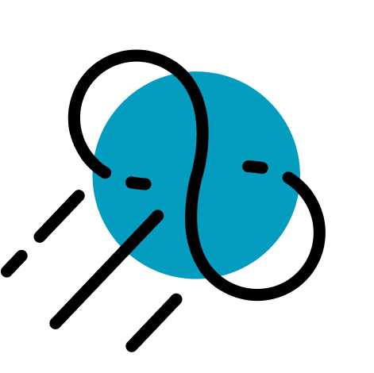

Color Motif
브랜드의 메인컬러가 될 색은 차분하면서도 안정된 느낌을 줍니다.

작업기여도 개인 프로젝트 100%
'우주'라는 컨셉에서 본인과 연관된 세 가지 키워드를 잡았습니다.
미지의 영역인 우주를 상징 끝을 모르는 가능성
끊임없이 돌아가는 혜성의 공전을 상징, 꾸준하고 해내고 마는 성격
브랜드의 메인컬러가 될 색은 차분하면서도 안정된 느낌을 줍니다.
우주를 닮은, 무한한 가능성을 품은
아이텐티티를 나타내는 주요 메타포인 혜성을 심플하게 나타냈습니다. 무한한 가능성을 강조하기 위하여 혜성 주위를 돌고 있는 것처럼 표현했습니다.

광활한 우주를 현대적으로 표현하기 위하여 흑백 위주의 색을 사용하였습니다. 때문에 포인트 컬러로는 무채색이 주는 답답함을 해소하기 위하여 청량감을 줄 수 있는 시원한 푸른색 계열을 선택했습니다.
포인트를 줄 수 있는 요소가 포함되어 있으면서도 깔끔한 서체가 필요했습니다. 가독성 또한 중요한 요소였기 때문에 과하지 않은 디자인을 가지고 있으며, 다소 차가운 무드를 줄 수 있는 KBO 다이아고딕체를 사용하였습니다.